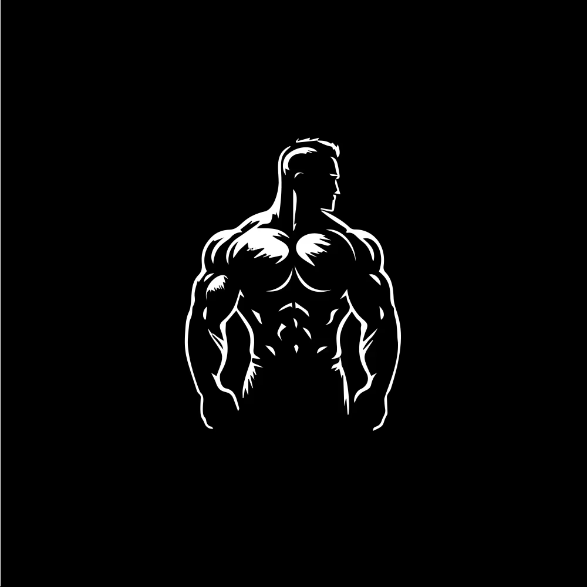
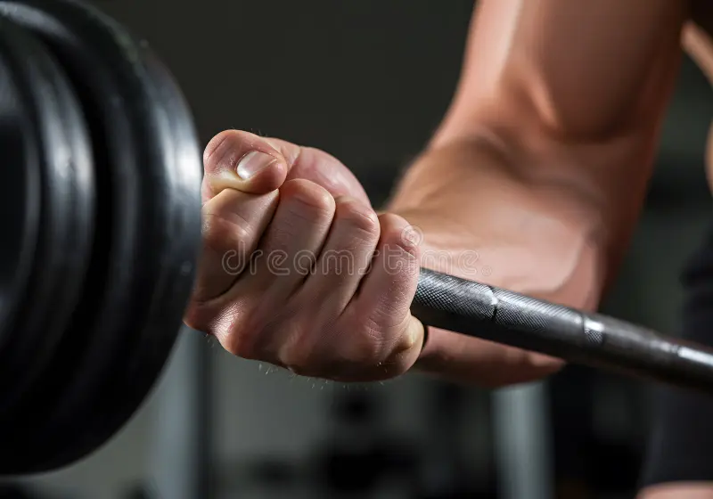
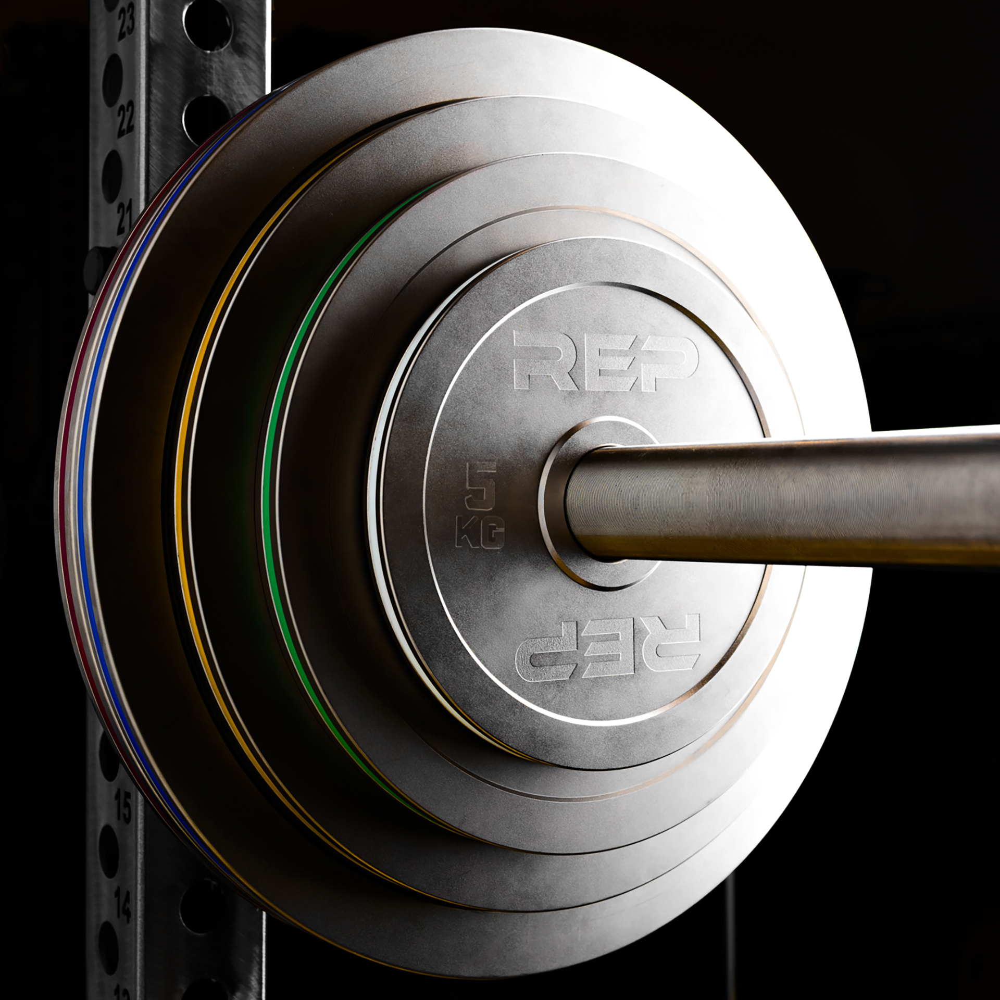
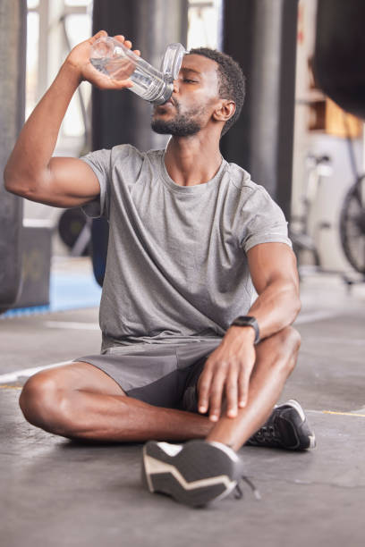
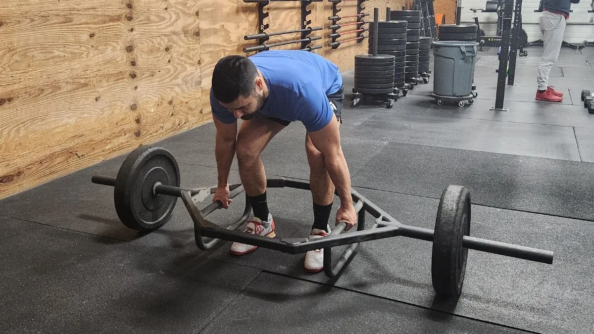
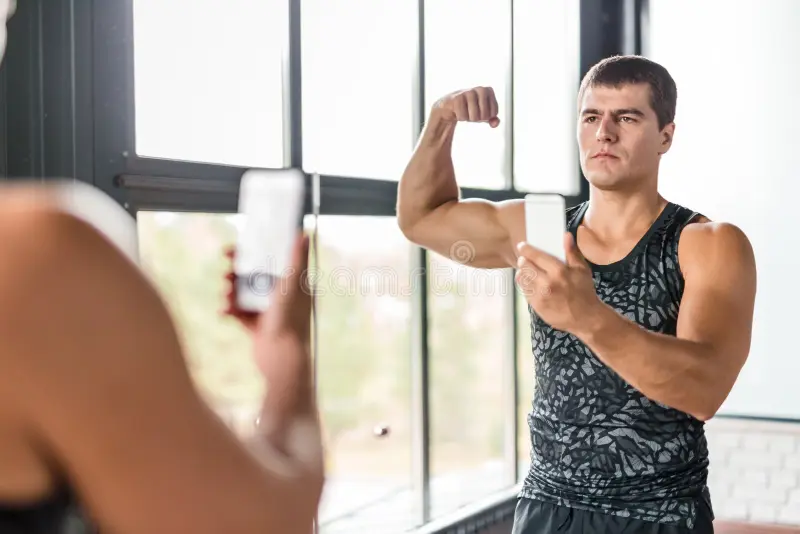
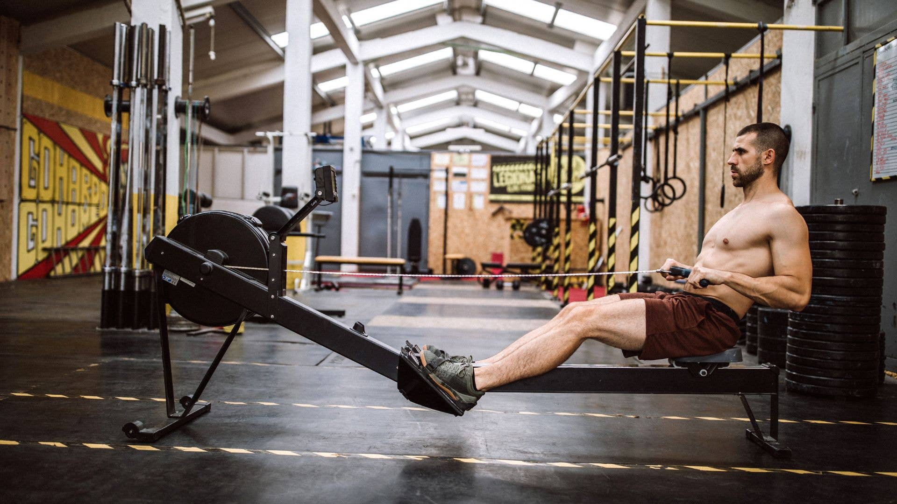

The place where you push your limits, and achieve your goals
The Gym
Why the Gym ?
We go to the Gym, not only to be good looking, but to have a good life, with good health, and also the gym teaches us the
Discipline, and this affects many parts in our lives, such as, consistency in work, study, and business. We love to go the gym to build good muscles, and also to be fit.
This arises the confidence for each person, that's only a little bit of the advantages of the Gym as they are many and can't be listed in This
tiny paragraph.

Beginner's Guide:
Step 1: Define your Goal:
Before Touching a weight you must know why you are there. Are trying to build muscles, lose body fat, or simply improve
your daily energy? Knowing your specific goal dictates which exerises you should focus on.
Step 2: Master the Form:
ُEgo lifting is the fastest way to get injured. Start with empty barbells or bodyweight movements.
Watch tutorials or ask for help to ensure your posture, grip and range of motion are perfect before adding heavy plates.

Step 3: Start Light and Progress Slowly:
Use the principle of "Progressive Overload." Start with weights that feel managable for 10-12 reps. Each week, try to left slightly
larger than the weight of the last week, this cuases the progressive overload, and make your muscles grow more larger to withstand the new heavy weight.

Step 4: Prioretize Rest and REcovery:
muscles don't grow while you are lifting; they grow while you are resting. Training the same muscle every day will not benifit
your muscle, instead, it is going to decrease the muscle growth specifically for this muscle part, as you don't give it much rest to recover and grow larger.

Health Benifits:
1. Builds Bone Density:
Heavy resistance training forces your bones to adapt and become denser, which reduces the risk of osioprosis to you at your age.

2. Boosts basal metabolic rates:
Muscle tissue burns more energy than fat tissue. The more muscles you carry, the more calories your body naturally burns while you are just siiting around resting.

3. Strengthen Cardiovascular Health:
Even if you only lift weight, minimizing rest times gets your heart rate up, improving blood flow and lowering resting and blood pressure.

4. Sharpens Mental Fortitude:
The discipline required to finish a grueling set translates directly to everyday life. It builds mental toughness, reduces anxiety, and releases heavy doses of stress-relieving endorphins.
Workout Types:
You have many workout types to choose from when you start workouting:
1. Push Pull Leg:
A highly efficient workout type 3 to 6-day split that groups muscles by their movement type. Push days for chest, triceps and front and lateral shoulder.
Pull, for pulling muscles, such as whole back, biceps and behind shoulder, and legs is for legs. So, here you can choose whether to train the muscle twice or once a week.
2. Bro Split (Body Part Split):
The classic bodybuilding routine where you dectate each day for a single muscle in the week, like (monday for chest, tuesday for back,...)
So, this trains you muscles once a week only, which is considered not effective to build more muscles for beginners.
3. Upper / Lower Split:
A 4 day routine that devides the body in half, so you train your whole upper body, like chest, arms, shoulders, and chest in one day
and the other day for the lower body, which is the legs. Excellent for balancing strength and recovery.
4. Full Body Routine:
Training all single major muscle in only 1 session, usually 3 days per week. This is the absolute
best starting point for beginners or busy people who can't be in the gym for 5 days a week.
Nutrition (The most important thing for any gym bro)
1. The foundation (Hydration and Sleep):
No amount of healthy food matters, if you don't take enough time for sleep(7-9 hours), and if your body isn't hydrated enough (3-5L of water) each day. All of these matters a lot for a person aiming to have good body, and get the advantage of the healthy food.
2. The Building Blocks (Macro nutrients):
1. Protien: Your body must have around 1.6gm to 2gm of protein for each kg of your body like if you are 60kg your body must have around 90gm to 120gm of protien
2. Carbohydrates: The fuel that gives your body the energy to lift heavy weights (Rice, oats, potatoes, fruits, and nuts)
3. Fats: We mean here the healthy fats, from nuts, butter, eggs, fruits, and vegetables, not those from junk food. Fats are essential for hormone regulation and joints health.
3. Supplements if needed:
Taking supplements, like: Whey protein, mulivitamins, creatine is essential if you can't give your body all the food needed.